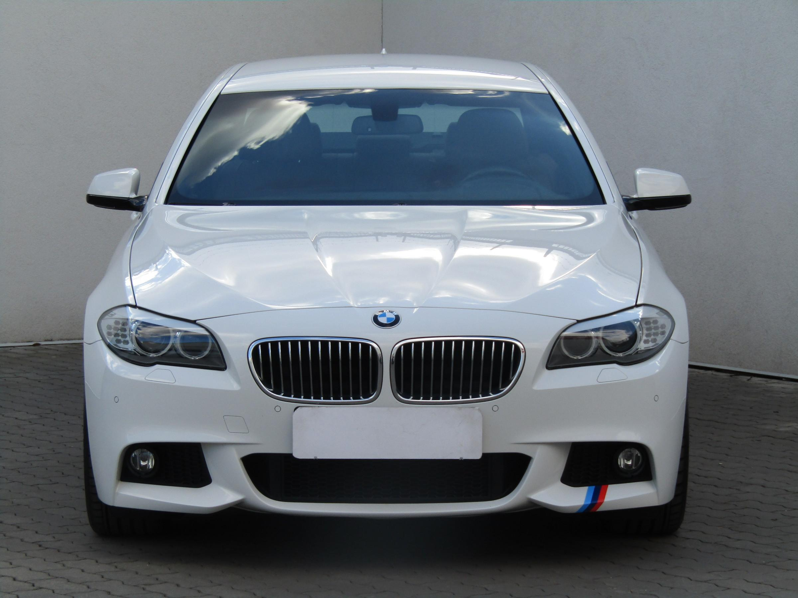

-

Lexus IS 300 2.5 koupeno nové v ČR / po prvním majiteli 2014 / 2.5 / 133 kW / hybridní / sedan / automat / stříbrná metalíza / stav tach. 35601 km / 5 míst / 4 dveře / STK do 09/2020
-

Kia Sorento 2.2CRDi SLEVA 20 000 KČ koupeno nové v ČR / po prvním majiteli / servisní kniha 2015 / 2.2CRDi / 147 kW / nafta / SUV / automat / šedá / stav tach. 57960 km / 5 míst / 5 dveří
-

Ford Ranger 2.2TDCi XLT SLEVA 50 000 KČ koupeno nové v ČR / po prvním majiteli / servisní kniha 2017 / 2.2TDCi / 118 kW / nafta / pick up / 4×4 / manual / šedá / stav tach. 34915 km / 5 míst / 4 dveře / STK do 04/2021
-

Volkswagen Multivan 2.0 TDi Life SLEVA 60 000 KČ servisní kniha 2013 / 2.0 TDi / 132 kW / nafta / minibus / automat / černá metalíza / stav tach. 97954 km / 7 míst / 4 dveře / STK do 06/2020
-

BMW Řada 5 3.0d M Paket SLEVA 40 000 KČ koupeno nové v ČR / servisní kniha 2012 / 3.0d / 230 kW / nafta / sedan / 4×4 / automat / bílá / stav tach. 121372 km / 5 míst / 4 dveře / STK do 11/2020
-

Volvo XC60 2.4D 2014 / 2.4D / 158 kW / nafta / SUV / manual / modrá / stav tach. 46939 km / 5 míst / 5 dveří / STK do 03/2021
{kind=link}